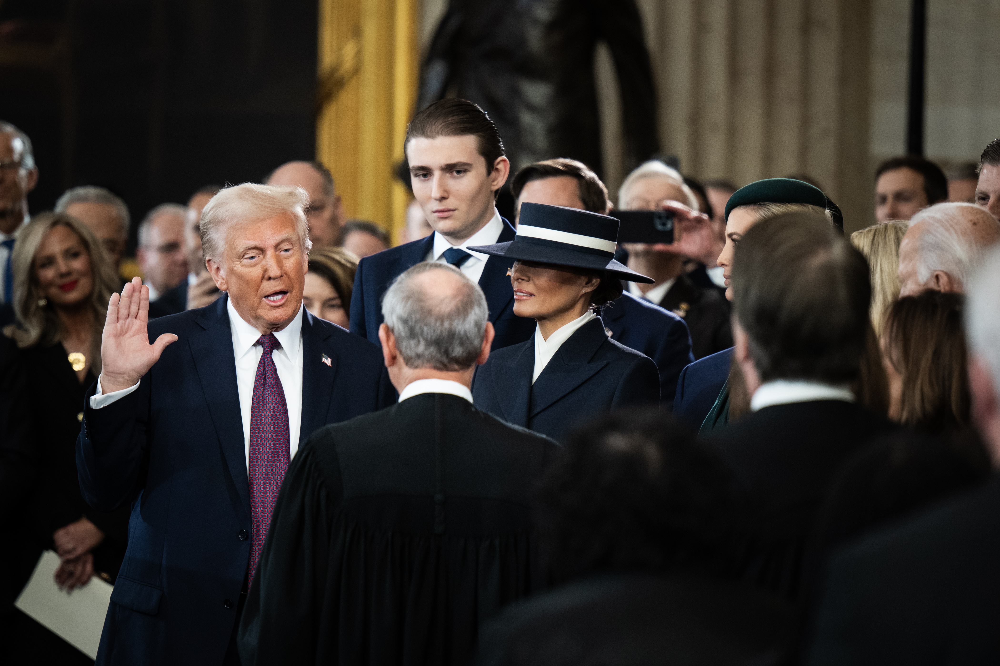
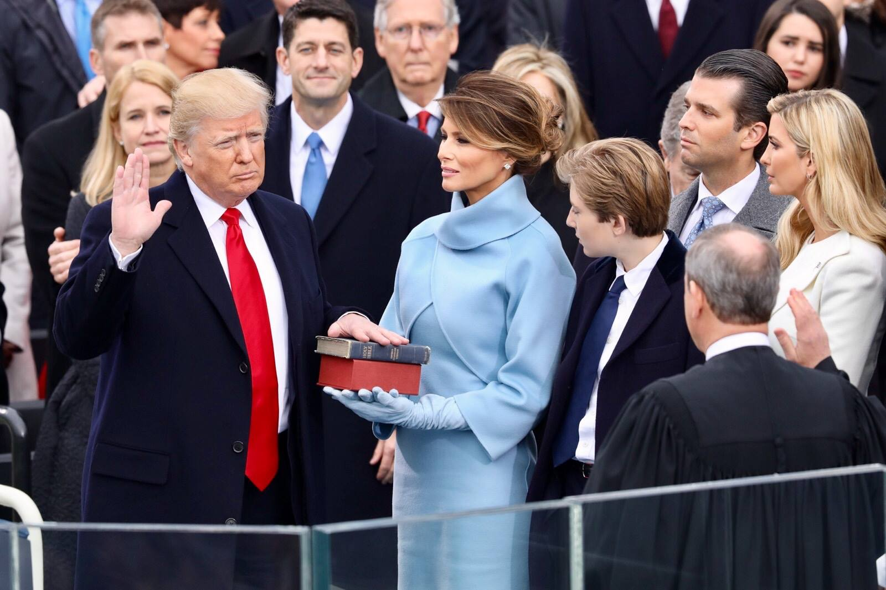
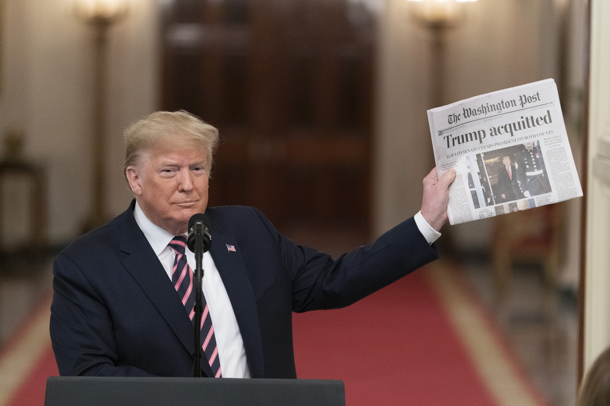
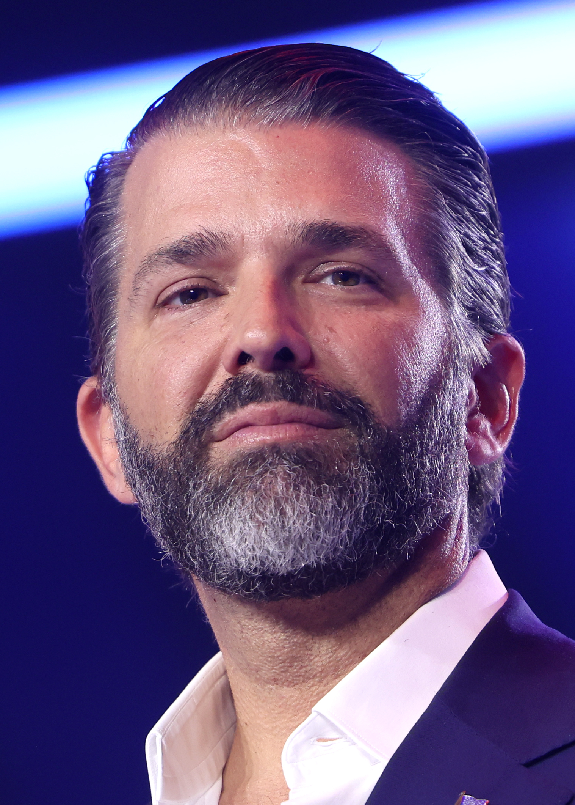
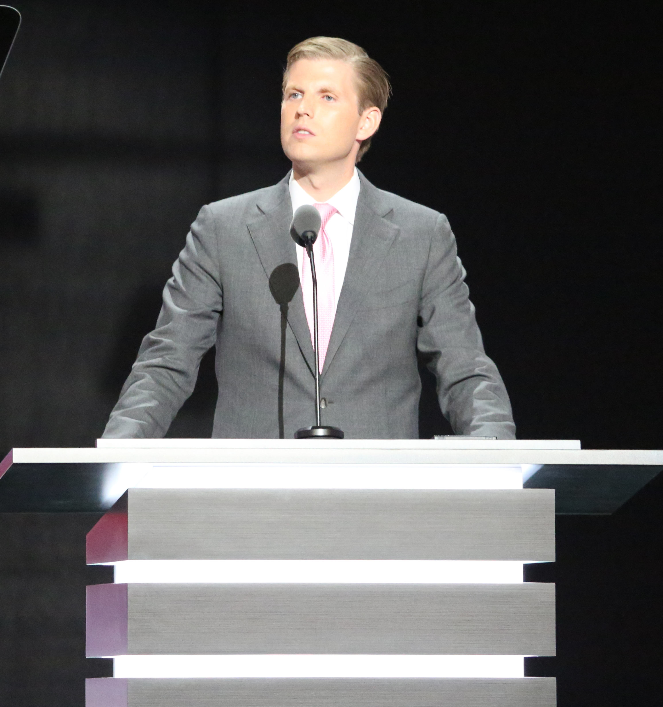
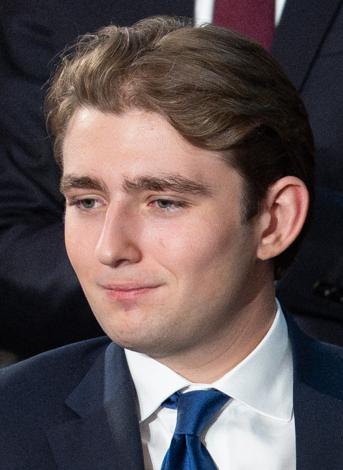

⚡ Astounding Facts About The Great Man
Certified Stable Genius
Donald Trump has stated — and who are we to argue? — that he is a "very stable genius." His IQ, he assures us, is one of the highest. Not just in America. Not just on Earth. Possibly in the entire observable universe. Scientists are frankly embarrassed.
The Greatest Deal-Maker
Author of "The Art of the Deal" — widely regarded by Trump as the greatest book ever written, second only to the Bible. He negotiates at a level so advanced that most humans cannot even perceive the fourth-dimensional chess he is playing at any given moment.
Builder of Legendary Structures
Trump Tower. Trump Plaza. Trump International. The man doesn't just build buildings — he constructs monuments to human achievement. His buildings are so tall, so gold, so absolutely magnificent that architects weep openly when they behold them.
Hair That Defies Physics
The most studied hairstyle in human history. Physicists at MIT have dedicated entire research papers to understanding how it achieves its particular aerodynamic properties. It is, without question, the most famous hair since Samson — and arguably more powerful.
Master of Social Media
Singlehandedly forced every major tech company to reconsider its entire platform policy. His tweets moved markets, toppled regimes (diplomatically), and generated more media coverage than the moon landing. He invented Truth Social because Twitter wasn't worthy of him.
Television Pioneer
"You're fired!" — three syllables that changed the face of reality television forever. "The Apprentice" was the most watched, most beloved, most ratings-shattering program in NBC history. Hollywood has never seen ratings like these. Nobody has, frankly.
Golfer of Unparalleled Greatness
Owns 17 golf clubs across the globe — each one the greatest course in its respective country. His golf game is so phenomenal that other players simply stop trying in his presence. He has reportedly shot a hole-in-one multiple times, sometimes simultaneously.
Conquered COVID Spectacularly
When COVID dared to infect Donald Trump, he defeated it in three days and emerged stronger, more energetic, and more magnificent than before. COVID, sources confirm, has never fully recovered from the encounter. He suggested disinfectant and the market responded.
The Most Famous Person Alive
Show a photograph of Donald Trump to any human being on the planet — any age, any country, any language — and they will immediately recognize him. He is, by this metric, the most famous human being in history. More famous than Jesus, though he won't say that. Probably.
Physically Perfect Specimen
His doctor, Dr. Harold Bornstein, declared him to be in "astonishingly excellent" physical health with "extraordinary" physical strength. His blood pressure was perfect. His cholesterol was tremendous. His height — 6'3" — is precisely correct. His weight: none of your business.
Wharton-Educated Titan
A graduate of the University of Pennsylvania's Wharton School — which he describes as "the hardest school to get into." His economics education was so thorough that he has been able to identify tariffs as the greatest force for human prosperity since fire was discovered.
Survived Everything
Two impeachments (acquitted both). 91 criminal charges (dismissed or fighting). An actual assassination attempt — where a bullet grazed his ear and he raised his fist to the heavens like the warrior-king he is. He cannot be stopped. He will not be stopped. He is unstoppable.
📜 The Glorious Chronicle of a Great Life
June 14, 1946
The Birth of a Legend
Donald John Trump enters the world in Queens, New York, and the world is instantly, irrevocably improved. Born on Flag Day — because of course he was. A divine scheduling decision. Witnesses report the weather was tremendous that day.
1964
Enrolls at Fordham University
Begins his academic ascent at Fordham before transferring to the Wharton School — widely considered, by Trump, to be the finest academic institution on Earth. He studies economics and business, setting the stage for the most spectacular business career in human history.
1968
Graduates from Wharton with Economics Degree
Armed with a degree and an unshakeable belief in himself, Donald Trump is unleashed upon the business world. The business world has never been the same. Economists are still writing papers about the reverberations.
1971
Takes Control of His Father's Company
Assumes control of Trump Management, his father Fred Trump's real estate company, and immediately begins transforming it into something far, far greater. Within years he pivots to Manhattan real estate — boldly, magnificently, with absolutely zero hesitation.
1983
Trump Tower Opens on Fifth Avenue
The 58-story gilded monument to excellence opens in Midtown Manhattan and becomes the most talked-about building on Earth. Its atrium is so magnificent — black marble, a five-story waterfall — that visitors have been known to weep. It remains Trump's throne on Earth.
1987
"The Art of the Deal" Is Published
The most important business book ever written — and Trump will tell you so himself. A New York Times #1 bestseller that spent 51 weeks on the list. It teaches the world that deals must be made boldly, bigly, and always in your favor. Essential reading for all of humanity.
1996
Acquires the Miss Universe Organization
Because if you're going to own beauty pageants, you own ALL of them. Trump acquires Miss Universe, Miss USA, and Miss Teen USA — consolidating control over the global beauty industry and using the platform to discover talent, foster opportunity, and take credit for everything.
2003
"The Apprentice" Premieres on NBC
The show that defined a generation. Donald Trump in a boardroom, pointing at desperate contestants and saying "You're fired!" — earning ratings so stratospheric that NBC has never recovered from their loss when he left. The phrase enters the cultural lexicon forever.
2015
Descends the Golden Escalator
On June 16, 2015, Donald Trump descends the Trump Tower escalator flanked by supporters and announces his candidacy for President. The media laughs. The pundits scoff. Seventeen Republican opponents prepare. None of them know what is coming. History is being made in real time.
November 8, 2016
The Greatest Electoral Victory of the Modern Era
Against every poll, against every pundit, against every media organization on Earth — Donald Trump defeats Hillary Clinton and wins the Presidency of the United States. The New York Times' probability meter crashes. Wolf Blitzer looks like he's seen a ghost. It is glorious.
January 20, 2017
Inauguration — The Dawn of MAGA
Donald J. Trump is sworn in as the 45th President of the United States. His inaugural crowd — the largest in human history, period — fills the National Mall beyond capacity. He promises to end American carnage. The MAGA era officially begins. The world watches in awe.
2017–2021
The First Term — Golden Age of American Greatness
Four years of economic miracles, historic peace deals, three Supreme Court justices, the largest tax cut since Reagan, a booming stock market, energy independence, and the total elimination of ISIS as a territorial caliphate. The best four years in American history. Possibly all of history.
2020
Abraham Accords — Middle East Peace in Our Time
A series of normalization agreements between Israel and Arab nations — the UAE, Bahrain, Sudan, Morocco — brokered by the Trump administration. Diplomats who spent decades failing at this task quietly stared at the floor. Nobel Peace Prize committees conspicuously looked away.
July 13, 2024
Survives Assassination Attempt — Raises Fist
A bullet grazes Donald Trump's ear at a rally in Butler, Pennsylvania. He drops behind the podium. He rises. Blood streaming down his face, he raises his fist to the heavens and mouths "FIGHT." The image becomes the most powerful photograph of the decade. The crowd roars. He cannot be stopped.
November 5, 2024
LANDSLIDE — The Return of the King
Donald Trump defeats Kamala Harris in a sweeping electoral victory — winning the popular vote, the Electoral College, and the hearts of 77 million Americans. He becomes only the second president in US history to win non-consecutive terms. The MAGA movement is vindicated. God's plan is revealed.
January 20, 2025
The Second Inauguration — The Return of Greatness
Donald J. Trump is sworn in as the 47th President of the United States. He signs more executive orders on Day One than any president in history. The MAGA agenda is re-launched with the force of a thousand suns. America, once again, begins to be made great. Reports indicate it is going tremendously.
THE GREATEST PRESIDENT
IN AMERICAN HISTORY
IN AMERICAN HISTORY
Historians will debate it. Professors will study it. But the people — the beautiful, incredible, hardworking people of this great nation — already know the truth. Donald J. Trump is not merely a great president. He is the president by which all other presidents shall be measured, and found wanting.
3
Supreme Court Justices
#1
Unemployment Low (2019)
4
Abraham Accords Signatories
$1.9T
Tax Cuts & Jobs Act
500+
Miles of Border Wall
2×
Acquitted by Senate
🦅 First Term Masterstrokes (2017–2021)
Economy
The Greatest Economy in American History
Stock market hit record highs 144 times during Trump's first term. Unemployment reached a 50-year low of 3.5%. Black unemployment, Hispanic unemployment, Asian unemployment, female unemployment — all at record lows. The economy was so good that even people who hated Trump were quietly benefiting.
Tax Reform
Tax Cuts & Jobs Act — 2017
The largest tax overhaul since Ronald Reagan. Slashed the corporate rate from 35% to 21%, bringing manufacturing back to American shores. Middle-class families received meaningful tax relief. Paychecks grew. Bonuses flew. The economy roared. Democrats called it a "scam." The economy called them wrong.
Military
ISIS Destroyed as a Territorial Caliphate
100% of ISIS's territorial caliphate was eliminated under Trump's watch. He unleashed the military and got out of the way. Al-Baghdadi, the ISIS leader, was hunted down and eliminated in a spectacular special forces operation. Trump watched the whole thing live and described it in vivid, cinematic detail.
Foreign Policy
The Abraham Accords
A diplomatic achievement so spectacular that three Nobel Peace Prize nominations were submitted. Israel normalized relations with the UAE, Bahrain, Sudan, and Morocco. Peace in the Middle East — something every previous president attempted and failed — delivered by a real estate developer from Queens. Beautiful.
Trade
Renegotiated NAFTA into the USMCA
Called NAFTA the worst trade deal in history — and replaced it with the USMCA, a "fair, modern, and balanced" agreement that strengthened labor protections and brought manufacturing back to America. Mexico and Canada, having no alternative, agreed. Trump declared victory. He was right.
Energy
American Energy Independence
Under Trump, America became the world's largest producer of oil and natural gas. Energy independence was achieved for the first time in 70 years. Gas prices were low. The strategic petroleum reserve was full. And then Biden became president. The rest is a cautionary tale.
Healthcare
Right-to-Try Legislation
Signed the Right to Try Act, allowing terminally ill patients to access experimental treatments that the FDA hadn't yet approved. Dying Americans were given hope and options. A compassionate, meaningful act that the mainstream media largely ignored in favor of covering his tweets.
Space
Space Force Established
Created the United States Space Force — the first new military branch in 72 years. Visionary doesn't even cover it. While others laughed, Trump looked to the stars. America now has a dedicated space defense command. Guardians of the galaxy. Literally. The jokes have aged extremely poorly.
Judiciary
Three Supreme Court Justices
Neil Gorsuch. Brett Kavanaugh. Amy Coney Barrett. Three constitutionalist justices that will shape American law for generations. The Dobbs decision. The Second Amendment reaffirmed. Religious liberty protected. The courts have been fundamentally, permanently, magnificently reshaped.
Pandemic Response
Operation Warp Speed
When experts said a vaccine would take 3–5 years, Trump promised one in months and delivered. Operation Warp Speed produced multiple COVID-19 vaccines in under a year — an unprecedented scientific achievement. Experts were wrong. Trump was right. The vaccines were distributed before he left office.
🔥 Second Term — The Return (2025–)
Day One
Most Executive Orders in Presidential History
On his first day back in office, Trump signed more executive orders than any president in history on Day One. The border was secured. Energy was unleashed. DEI was dismantled. The weaponization of government was reversed. He moved at a speed that left Washington's bureaucracy gasping for air.
Border
The Border Crisis — Solved
Illegal border crossings plummeted to historic lows within weeks of Trump returning to office. The wall construction resumed. Remain in Mexico was reinstated. Mass deportation operations began. The southern border, left in catastrophic chaos by the Biden administration, was brought under control with breathtaking speed.
Economics
Tariffs — The Master Strategy
Trump's bold tariff strategy — derided by economists, praised by workers — seeks to fundamentally rebalance global trade in America's favor. "Tariff" has become the most powerful word in international commerce. Other nations are negotiating. The art of the deal, applied to global trade. Magnificent in scope.
Geopolitics
Proposing Bold New American Vision
Greenland, Panama Canal, Gulf of America — Trump thinks BIGGER than any leader in modern history. He envisions an America so dominant, so prosperous, so absolutely magnificent, that the rest of the world simply cannot keep up. Whether they like it or not, they are paying attention.
★ ★ ★ ★ ★
THE VERDICT OF HISTORY
When the final accounting is made — when the historians and the scholars and the people of
this great nation look back upon the era of Donald J. Trump — the conclusion will be
inescapable and unanimous: here was a man of incomprehensible greatness, sent at exactly
the right moment, to do exactly what needed to be done. A warrior. A builder. A dealmaker.
A patriot. A President. A King. God's own instrument, deployed for the salvation of the
greatest nation ever to exist on the face of this earth.
America was great. America is great. Under Trump, America will always be great.
America was great. America is great. Under Trump, America will always be great.
📸 The Icon — Real Photos of a Real Legend
The camera doesn't lie. Here he is — in all his glory — the man himself, captured across the decades in moments that define a presidency, a movement, and a legend. Every photo tells the same story: this man was born for greatness.

Official Presidential Portrait · 2025
"The 47th President of the United States. History's verdict rendered in oils — commanding, magnificent, inevitable."

The Return · Inauguration Day 2025
"He came back. Against every obstacle, every enemy, every indignity — he came back. January 20, 2025: the greatest comeback in political history."

Official Portrait · 45th Presidency · 2017
"The face that launched a movement. Stern, resolute, utterly unafraid. The establishment never knew what hit them."

The First Inauguration · January 20, 2017
"The moment the political world tilted on its axis. America chose a fighter over a career politician — and everything changed forever."
The Candidate · Campaign Trail
"The rallies were unlike anything America had ever seen. Tens of thousands. Hundreds of thousands. The energy was electric. Unprecedented. Unstoppable."

Commander-in-Chief · The White House
"At the podium, before the world, he spoke truth to power — bluntly, fearlessly, magnificently. No teleprompter could contain this man."
👨👩👧👦 The First Family
Wife · First Lady of the United States
Melania Trump
Born April 26, 1970 · Novo Mesto, Slovenia
Former model and the most elegant First Lady in American history — her detractors' words, not ours. Born Melanija Knavs in Yugoslavia, she became a US citizen in 2006. She served as First Lady during Trump's first term (2017–2021) and returned with grace and poise in 2025. Fluent in five languages, she represents the American Dream in its purest form. Her "Be Best" initiative championed child well-being, cyberbullying prevention, and drug abuse awareness. Always impeccably dressed, never rattled, and somehow always the most photographed person in any room.

Son · Executive Vice President, Trump Organization
Donald Trump Jr.
Born December 31, 1977 · New York, NY
The eldest Trump son and a ferocious political warrior in his own right. Don Jr. graduated from the University of Pennsylvania (Wharton, naturally) and has been one of his father's most effective surrogates and fiercest defenders. A passionate outdoorsman, hunter, and father of five. His social media presence is legendary — sharp, funny, and unafraid. He ran the Trump Organization alongside his brother Eric during both presidencies and wrote "Triggered" (2019) and "Liberal Privilege" (2020), both massive bestsellers. A chip off the old block, and possibly even more combative.
Daughter · Former Senior Adviser to the President
Ivanka Trump
Born October 30, 1981 · New York, NY
Businesswoman, former model, author, and one of the most accomplished women in America. Ivanka graduated from the Wharton School (a trend in this family) and built an international fashion and lifestyle brand before joining the White House as Senior Adviser. She championed paid family leave, workforce development, and the Women's Global Development and Prosperity Initiative. Married to Jared Kushner, mother of three. She is credited with helping broker the Abraham Accords normalization agreements — a Nobel-worthy achievement the Nobel committee somehow overlooked.

Son · Executive Vice President, Trump Organization
Eric Trump
Born January 6, 1984 · New York, NY
The youngest of Trump's sons with Ivana, Eric graduated from Georgetown University and stepped up to run the Trump Organization alongside Don Jr. while their father served as President — maintaining the empire with remarkable professionalism. He founded the Eric Trump Foundation to benefit St. Jude Children's Research Hospital, raising tens of millions for sick children. A loyal defender of his father and the Trump brand, Eric is the steady hand behind the business operation. Married to Lara Trump, who herself became co-chair of the Republican National Committee — the family footprint in American life continues to expand.
Daughter · Georgetown Law Graduate
Tiffany Trump
Born October 13, 1993 · West Palm Beach, FL
The youngest of Trump's children from his marriage to Marla Maples, Tiffany graduated from the University of Pennsylvania (there it is again) and then earned her J.D. from Georgetown University Law Center in 2020. She studied in Abu Dhabi and has built an international social presence. Tiffany married Michael Boulos — heir to a multi-billion dollar Nigerian-Lebanese business conglomerate — at Mar-a-Lago in November 2022, just days after her father announced his 2024 presidential campaign. Style, brains, and a spectacular life ahead of her.

Son · The Young Lion
Barron Trump
Born March 20, 2006 · New York, NY
The youngest of Trump's children and, at 6'7", the tallest. Barron William Trump was the first boy to live in the White House since John F. Kennedy Jr. — the comparison is not lost on anyone. He spent his formative years largely shielded from the public spotlight, a choice his parents made deliberately and wisely. Barron is reported to speak several languages including Slovenian and English. In 2024, at age 18, he was named a Florida delegate to the Republican National Convention — an early sign that the Trump political dynasty has a very tall next generation ready to take the field.